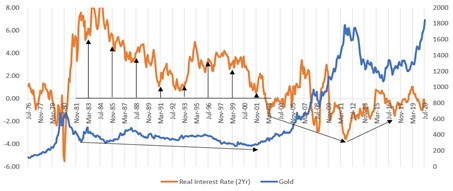
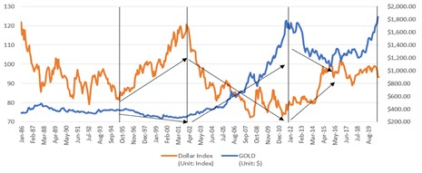

IAU [iShares Gold Trust]
Ver. August 29, 2020
A. 테마
i. 금은 실질금리 및 달러가치의 함수에 의해 최근 가격 변동을 설명할 수 있다
ii. 실질금리 및 달러가치 전망
1. 실질금리의 하락 전망 및 달러가치의 약세 전망을 하고 있으며, 이는 금 가격의 상승으로 이어질 것으로 예상
2. 실질금리 및 달러가치와 금 가격 비교
 
3. 실질 금리는 적어도 향후 2021년 7월까지 -1.7~1.45%까지 더욱 하락할 것으로 예상하고 있다.
4. 달러가치는 다른 나라와의 상대적인 영역으로 연구가 필요하다.
B. 현황 및 계획
i. 실질금리의 하락 전망에서 상승할 것이라는 전망이 나올 때까지 자산배분 투자 항목에 추가하여 투자
ii. 달러가치의 예측을 위해 다른 나라들의 실질금리 전망을 함께 비교해 보는 것이 필요하다.
iii. 현재 2Yr-CPI는 -에 머무르고 있음.